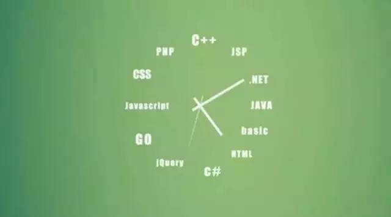

I sort of stumbled into the door of programming through a mix of tricks and deception, then kept running at full speed. Before the age of 26, I had almost no experience writing code, yet after graduating with a master's degree, I unexpectedly chose a startup that could not possibly provide training. I fought upstream under the triple pressure of daily worries about the company going bankrupt, fear of being fired, and cold looks from colleagues. A year and a half later, when I left, I was already the lead backend engineer for a product with 5 million users. In the past, I was fearful of computer technology, believing that technical masters must be enveloped by Buddha's light, typing away day and night without rest, producing tens of thousands of lines of code daily. Now that I have seen a bit more of the world, looking back on that uneasy process like a first night, I do not find it inspirational at all, but rather regard it as a matter of course. An ideal programmer is no different from an ideal architect, an ideal accountant, or an ideal masseur; they are essentially all craftsmen. I believe that anyone can become an ideal programmer.

For the past three years, I have been hanging around the internet circle. I have met some programmers, worked with some, led some, and interviewed some. They have different educational backgrounds—some from Peking University, some from training institutions, some with PhDs, some high school dropouts; they also have different credentials—some from BAT, some from a bankrupt fund company (and were even salespeople). Their years of experience range from 0 to 15. But I think programmers only need to be divided into three categories: genius programmers, ideal programmers, and mediocre programmers. As for genius programmers, I dare say I have only come into contact with three. This is fate. Seven points are decided when you are a sperm: possessing excellent mathematical talent, calm and meticulous logic, and a passion for technology that delights in staying up all night to solve difficult problems. Three points come from starting early, early, early—wishing that while your peers are playing with mud, you start playing with computers, and breaking through the 10,000-hour rule before graduating from college. After that, it is already a game of life.
Genius programmers are rare to find and even harder to keep in abundance. The 90% I see are still mediocre programmers. The expansion of the IT era has made programmers as common as printers during the Renaissance. Most people who enter the field do so only for a bigger rice bowl, higher pay, and a better livelihood. Mediocre programmers write rotten code, without standards or consistency, clinging to the languages of the old world, yet they love to talk about grand architecture and performance. Their words are more beautiful than their deeds. And without exception, they believe that technology has no future, and that product, marketing, and management are more high-class crafts. As for 99% of them, they will naturally reveal that they happen to have talent in those areas, while despising to understand trivial problems like why a process crashed.
But my favorite thing is to be with ideal programmers. I wish I could eat and live with them. If allowed, I hope my team could be filled with their banners. Ideal programmers are kind-hearted (they are never the darlings of office politics; they are a group of innocent, bright, and joyful craftsmen), have naive curiosity (their eyes often sparkle with "Wow, how is this done!"), always strive for excellence (their catchphrase is "Let me study it a bit more"), and are willing to share (they are active on GitHub, Q&A communities, and around you, willing to spend precious time helping novices). Yes, they do not need to be managed. Just give them a general direction, and they will always return with unexpected results.
The ideal programmer and the mediocre programmer are separated by only one wall. The difference between the two is only six little bits, and it is precisely in these accumulated little bits over time that the gap between people is forever widened. Interestingly, I found that these six little bits are all related to awareness. That is to say, programmers, like all other emerging industry occupations, can reach the ideal stage as long as they have awareness plus the tempering of time. An ideal programmer is necessarily also an excellent problem-solver.
The first little bit: Focus on the present
I have seen too many programmers with restless minds, so I have to make "focus on the present" the first rule. They often have all kinds of little dreams, such as becoming a small tea farmer, a small goose vendor, doing product, sales, or investment, but they are "held back" by the high salary of programmers or by the lack of courage to change careers. Because of their lack of focus, they do not care about doing their own job well, do not care about honing their skills, and do not care about learning emerging technologies. Admittedly, this world has great product people (like Jobs), great salespeople (like Ellison), and great investors (like Peterffy), and they were without exception programmers at some point. But have you heard Buffett's comment on Gates? If Bill Gates changed careers to sell dogs, he would be the biggest dog dealer in the world. I firmly believe that except for a few geniuses, ordinary mortals can achieve success in multiple fields as long as they maintain sufficient focus. And even if you want to sell dogs next year, your programmer experience can still train you with strong logic, caution, and patience, which are considerable competitive advantages in any industry.
The second little bit: Thinking ability and driving force
I believe that handling unexpected events such as bugs, crashes, tuning, and intrusions can better reflect the gap between mediocre programmers and ideal programmers than programming itself. When facing an unknown problem, how to locate the core problem under complex conditions, how to peel back layers to analyze the underlying causes, how to eliminate interference and restore a minimal verifiable scenario, and how to seize key data to verify one's guesses and experiments—these are the best scenarios for demonstrating a programmer's thinking ability. Yes, when measuring the standard of an ideal programmer, thinking ability is more important than experience.
Sometimes a buddy runs over and asks me, "A submitted task is stuck; what should I do?" I always feel he could do better. For example, he could check or test other tasks to rule out the code itself; he could check for exceptions through the Web UI (if he does not have an account, he can ask me to provide one); he could inspect host logs or clear caches. At the very least, he should provide me with the task ID and console logs. Ideal programmers never wait for things to move forward; they will use every possible method to make things move forward.
The third little bit: Never Say No
I remember before leaving my previous company, I had a talk with my boss. He said my greatest strength was that I never told him something could not be done. Later, I found that in many teams, there is an opposition between technology and product. Programmers often use "technically impossible" to block product requirements, while product people often use "Why can Facebook do it but we can't?" to taunt programmers. These two phrases should be forbidden words. Fundamentally, they are not conducive to the mutual affection between programmer monkeys and product dogs.
The phrase "technically impossible" is easy to say, but how many people are 100% certain in their hearts when they say it? If you are not certain, why not go back and Google it before answering? I originally thought programmers were full of imagination; it is because of imagination that so many software and internet products that change our lives have been born. Having seen more, I understand that most programmers have become conservative in their fight against bugs and unwilling to take risks, while many teams are also unwilling to tolerate failure. Thus, "Say No" becomes a habitual resistance. Do you still remember why Zeng Guofan disbanded the Hunan Army? He said that army had "deeply accumulated evening spirit" and could no longer fight. To be an ideal programmer, you must not give yourself the opportunity to breed this evening spirit. If you face unreasonable demands, you can lay out the time cost and show a roundabout rescue plan. Simply saying "No" bluntly is not advisable.
The fourth little bit: Invest in the future
Programmer is a very cruel profession. The languages, frameworks, and patterns you learn and use may become yesterday's flowers within a few years; the other group of programmers you mock now may soon turn around and mock you. So ideal programmers, besides doing their own job well, must spend time investing in the future. What is "investment"? Investment means the time you put in now will return to you in the future in the form of more time or money (look at the current salaries of programmers who learned iOS a few years ago!). Take my own field—data mining—as an example. Around 2008, Hadoop began to rise, and the concept of "big data" became hot; Hadoop engineers were hard to find even with a fortune, and internet companies switched their data statistics, data analysis, and data mining businesses to distributed platforms. In recent years, while Hadoop continues to iterate, Spark has suddenly emerged as a new force, breaking Hadoop's sorting record. Its performance advantage from storing intermediate data in memory and its rich data structures make people fall in love with it endlessly, while various strange little bugs and the steep learning curve make people want to back out. So, anyone with clear eyes knows that Spark is the future trend (memory will become cheaper and cheaper). Under the condition that the main business stays on Hadoop, you can appropriately switch some small modules to Spark while paying attention to the development of the Spark community. Soon, the performance benefits gained from Spark will earn back the learning time invested earlier.
The fifth little bit: Make good use of tools
Making good use of tools can be divided into four levels:
- Search engine
- Don't believe in repetition
- Code snippets
- Automation
When I first entered the industry, a friend who had majored in computer science but became a civil servant asked me, "You have never learned programming at all. How do you usually write code?" I said, Google, and was ruthlessly ridiculed, so much so that my account names everywhere are 2shou, telling myself that I am a shameless second-hand programmer. This is a joke, but if asked now, I would still answer Google. A programmer's growth is like an expanding circle. Outside it is a boundless sea; the bigger the circle, the larger the surface in contact with the sea. The more you know, the more you do not know. Computer science is also a discipline that undergoes generational changes extremely rapidly, and it is the discipline with the best internet-based knowledge. It is difficult to use traditional formal teaching methods with instruction and learning; on the contrary, it is easy to obtain the latest knowledge through search engines.
Don't believe in repetition. The master's words call it the DRY principle (Don't repeat yourself). After writing a lot of code, one will have an intuitive judgment of good and bad code. My standards are conciseness and standardization. Conciseness is not a standard of aesthetic beauty. The less repetition, the fewer chances you have to make mistakes, and the lower the cost of later maintenance.
If you unfortunately lose code from three weeks ago, you might be able to reproduce the fragments lingering in your mind with an exceptional memory, but if it's code from three months ago, you probably won't have such good luck. An ideal programmer will make every effort to find effective ways to store information, saving short fragments such as code, scripts, configurations, and experience written down in flashes of inspiration at work, so that they can be reviewed at any time.
An ideal programmer must be lazy. To them, repetitive steps are as ugly as repetitive code. If they realize a task may be repeated over the long term, the sooner it is automated, the better.
The sixth little bit: Manage time
Time management is particularly important for the programming profession because when completing tasks, you must walk alone like a wolf in the wilderness. If you can steadily control yourself without external constraints and ensure efficient work and study, then over time you will certainly become more capable than the average person.
Programmers do high-intensity mental work. Generally, 4-5 hours of concentrated focus on the main job each day is enough, but outside of work, you must arrange time for learning. Besides studying, it's also necessary to leave some time to clear your mind. Use the breaks for making tea or drinking coffee to keep that precious time for yourself, thinking ahead and looking back—getting twice the result with half the effort.
Having said all this, some might ask, what's the use of going to great lengths to become an ideal programmer? Will it bring a high salary? No. Can it lead to a promotion? Not necessarily. Marrying a fair-skinned, rich, and beautiful woman? Better to go sell dogs instead.
Kazuo Inamori once told a story: craftsmen from the Meiji era were summoned by the emperor. Although they were uneducated country folk, they devoted their whole lives to a single craft, naturally carrying a noble temperament. An ideal programmer, perhaps, is someone who follows in that noble spirit.
Author: Sandy
Original link: http://mdsa.51cto.com/art/201511/496267.htm#topx